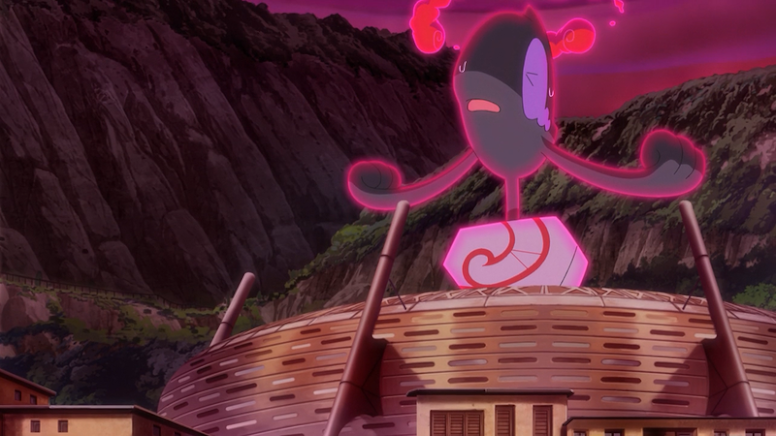

Os jogos Pokémon Sword e Shield introduziram uma nova mecânica de batalha chamada Dynamax, que possibilita que os Pokémon fiquem gigantes e ainda mais fortes. Alguns Pokémon podem assumir uma nova forma nesse processo, sendo um fenômeno conhecido como Gigantamax. Estas transformações podem ocorrer apenas em pontos específicos da região de Galar, normalmente nos Ginásios. Obviamente, esta mecânica não poderia deixar de ser mostrada no anime Pokémon.
No Brasil, a tradução oficial para Dynamax ficou Dinamax e a tradução para Gigantamax ficou Gigamax.
Nesta matéria, você vai descobrir quais são os Pokémon que foram mostrados usando esta mecânica até o momento.
A primeira primeira aparição de Gigamax foi uma transformação espontânea de Snorlax, quando Ash e Goh vão para a área selvagem de Galar para investigar o fenômeno do Dinamax, no episódio Jornadas 05 - Dynamax Surpreendente!
No episódio Jornadas 12 - Batalha de Titãs!, Lance, Campeão do Planalto Índigo batalhou contra Leon, Campeão de Galar. Nesta batalha, Lance usou seu famigerado Gyarados vermelho, que usou o Dinamax. Esta foi a primeira aparição do Dinamax no Anime.
No mesmo episódio mencionado acima, o Charizard de Leon usou o Gigamax.
Ainda em no episódio Jornadas 12 - Batalha de Titãs!, um Drednaw selvagem assumiu a forma Gigamax no final do episódio, causando um estrago no estádio Wyndon, onde aconteceu a batalha entre Lance e Leon.
Em Jornadas 13 - A Batalha Para Ser o Melhor!, o Pikachu de Ash se transforma em Gigamax para parar o Drednaw descontrolado. Em seguida, usa novamente em uma batalha contra Leon.
Em Jornadas 27 - Resistindo!, Roy enfrenta Leon usando seu Duraludon, que se transforma em Gigamax na batalha.
Um Pangoro selvagem se transformou em Dinamax no episódio Jornadas 42 - Espada e Escudo: Arvoredo Adormecido! e ficou descontrolado, então Ash e Leon tiveram que contê-lo.
Da mesma forma que Pangoro, o Centiskorch de Doug, apelidado de Centy, também ficou descontrolado após a transformação. Porém, neste caso, ele se transformou em Gigamax.
Continuando no mesmo episódio, um dos subordinados de Oleana batalhou contra Goh e usou seu Garbordor Gigamax.
Na batalha mencionada acima, Goh usou o Dinamax pela primeira em seu Raboot.
No episódio Jornadas 43 - Espada e Escudo: O Dia Mais Sombrio!, um Coalossal se transformou em Gigamax e também ficou descontrolado, tendo Ash e Leon que contê-lo também.
No episódio Jornadas 44 - Espada e Escudo: Daqui até Eternatus!, o Meowth da Equipe Rocket foi atingido pela energia Dinamax e assumiu sua forma Gigamax, ficando também descontrolado, retornando a si quando Jessie e James mencionam Giovanni.
No início do episódio Jornadas 45 - Espada e Escudo... A Lenda Desperta!, são mostrados alguns Wooloo e um Yamask de Galar transformados em Dinamax contra sua vontade.
Em Jornadas 82 - O Doce Sabor da Batalha!, Ash tem uma batalha não oficial contra Alba, líder do ginásio de Ballonlea em Galar. Ela usou seu Alcremie Gigamax.
Na terceira batalha entre Ash e Bia, que aconteceu no episódio Jornadas 86 - Uma Batalha de Mega Versus Max!, Bia usou seu Machamp Gigamax contra o Mega Lucario de Ash.
No episódio Jornadas 92 - Gengar Dá o Seu Melhor! O Caminho Para o Gigamax!, Ash vai até a cidade de Stow-on-Side para pedir ajuda para Allister, o outro líder do ginásio da cidade, com a transformação de Gengar em Gigamax. Na primeira tentativa, Gengar só consegue se transformar em Dinamax, mas após conseguirem preparar a Sopa Max, Gengar finalmente consegue atingir a forma Gigamax.
Em mais uma batalha pela Classe Ultra no Campeonato da Coroação Mundial, Ash enfrenta Marine, que usa seu Grimmsnarl Gigamax, no episódio Jornadas 99 - Marnie de Spikemuth!.